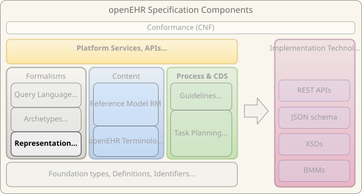

Generic Languages
Formal language specifications shared across openEHR: ODIN for data serialisation, BMM for information model definition, and expression languages BEL and EL for computable logic.

Specifications
-
Object Data Instance Notation (ODIN) STABLE — Object Data Instance Notation — Human-readable serialisation syntax for structured data trees
-
Basic Meta-Model (BMM) DEVELOPMENT — Basic Meta-Model of models & expressions — Technology-neutral language for defining object-oriented information models
-
BMM Persistence Model and Syntax STABLE — BMM human-readable serial format — File format for storing and exchanging BMM model definitions
-
Basic Expression Language (BEL) STABLE — A basic expression language — Boolean predicate syntax for archetype invariants and assertion blocks
-
Expression Language (EL) DEVELOPMENT — An advanced expression language based on BMM — Full expression language for archetype rules, decision logic, and guideline conditions